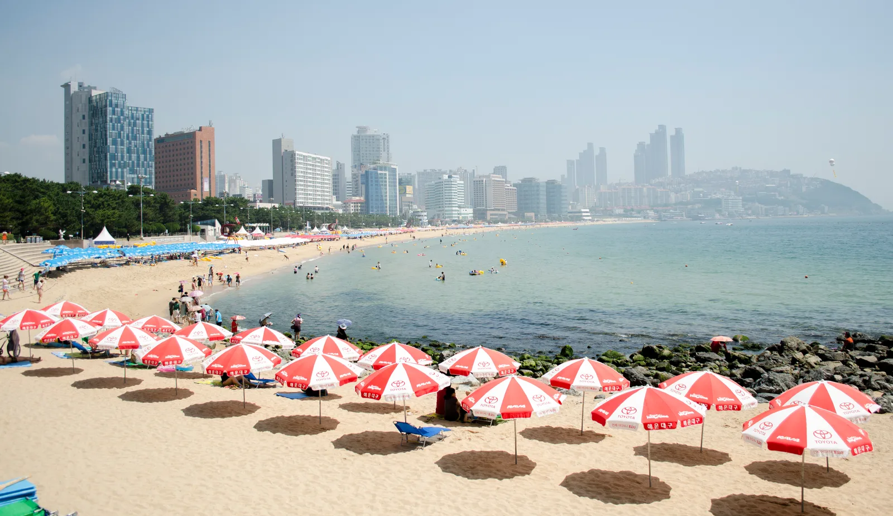
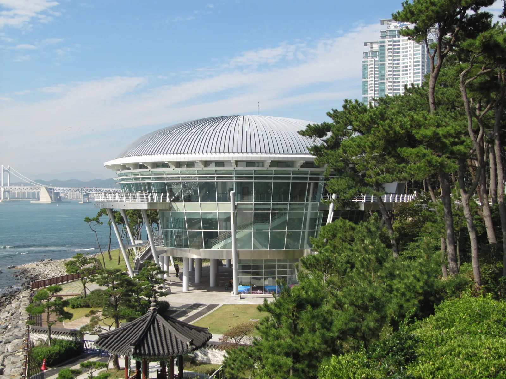
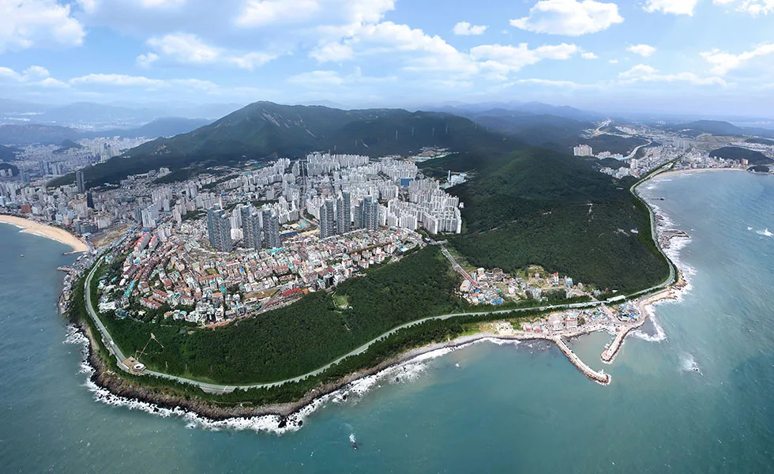
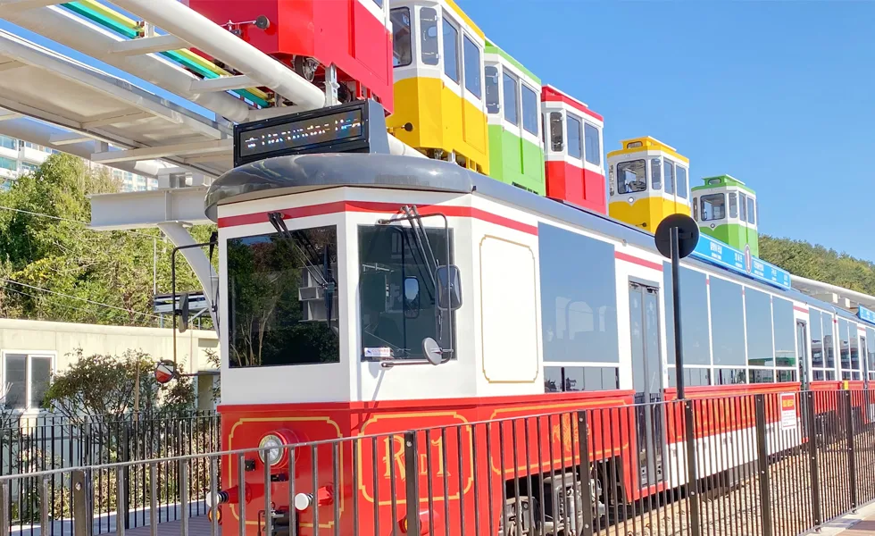
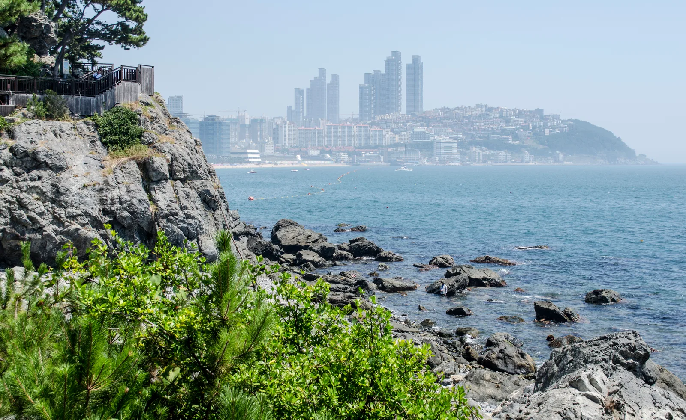
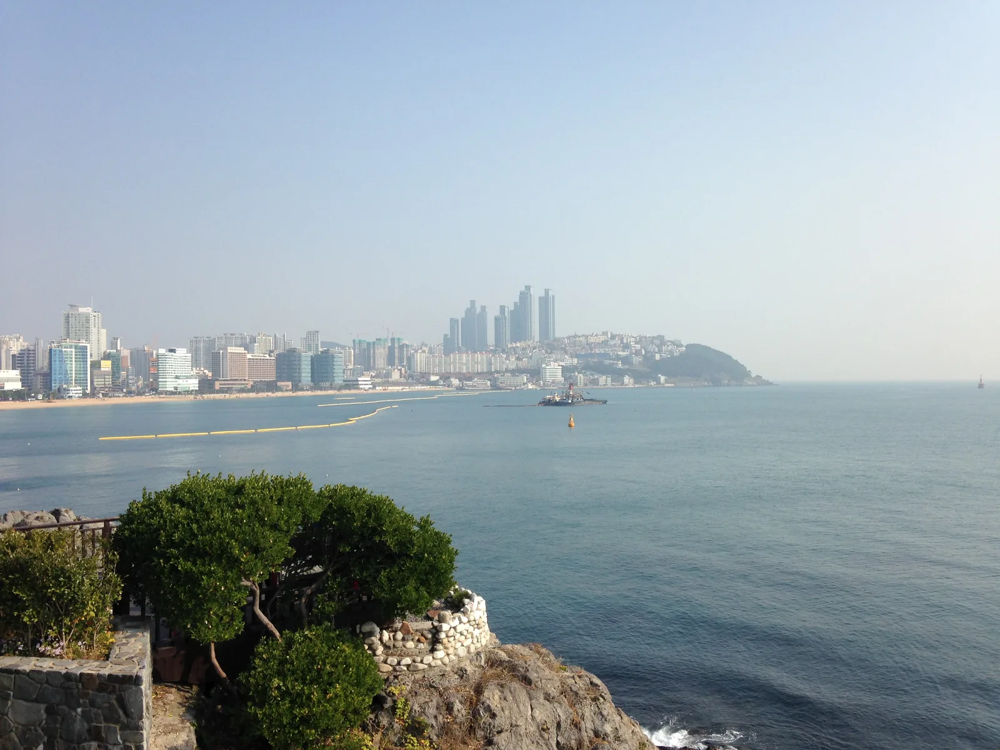
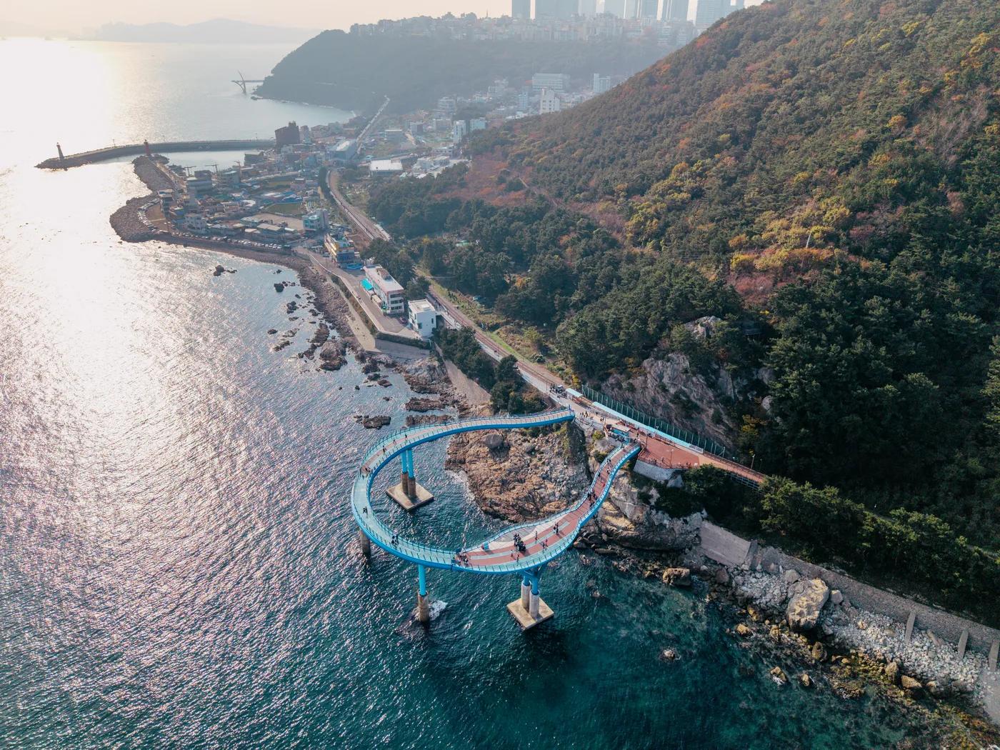

▲ 길이 1.5km, 폭 70~90m에 달하는 해운대해수욕장. 매년 여름 천만 명이 넘는 피서객이 찾는다
부산 여행에서 해운대는 대개 '해수욕장'으로만 소비된다. 하지만 실제로 해운대는 동백섬 누리마루 APEC하우스에서 시작해, 옛 동해남부선 폐선 부지를 되살린 해운대 블루라인파크를 따라 미포·청사포·송정까지 이어지는 하나의 해안 벨트다. 걸어서 문탠로드를 산책할 수도 있고, 스카이캡슐을 타고 공중에서 바다를 내려다볼 수도 있다. 이 기사는 2026년 기준 요금과 운영시간을 다시 확인해, 동백섬부터 청사포까지 순서대로 도는 법을 정리했다.
1. 해운대해수욕장 — 길이 1.5km, 대한민국 대표 해변

▲ 성수기 해운대해수욕장. 백사장 면적 12만㎡에 매년 천만 명 넘는 피서객이 몰린다 ⓒ Wikimedia Commons
해운대해수욕장은 해운대구 중동·우동에 걸친 길이 1.5km, 폭 70~90m, 면적 약 12만㎡의 백사장이다. 수심이 얕고 조수 변화가 크지 않아 가족 단위 피서객이 몰리는 대한민국 최대 규모 해수욕장으로, 해수욕장 개장 기간은 통상 6월 초부터 9월 말까지다. 주변에는 조선비치호텔 등 숙박시설과 마린시티의 고층 스카이라인이 맞닿아 있어, 해수욕장이면서 동시에 부산에서 가장 도심적인 해변이라는 점이 다른 해변과 구별되는 지점이다.
해수욕장 서쪽 끝은 동백섬과 맞닿아 있고, 동쪽 끝(미포)에서부터는 블루라인파크가 청사포·송정까지 이어진다. 즉 해운대해수욕장은 '종점'이 아니라 동백섬과 미포 양쪽으로 갈 수 있는 산책 벨트의 중심이라고 보는 편이 정확하다.
2. 동백섬·누리마루 APEC하우스 — 2005 정상회의가 열린 곳
해운대해수욕장 서쪽으로 이어지는 동백섬은 이름처럼 동백나무와 소나무가 빽빽한 작은 반도형 섬이다. 해안 산책로를 따라 신라 학자 최치원의 동상과 해운대 지명의 유래가 된 해운대석각, 황옥공주 설화를 담은 인어상이 차례로 나온다. 산책로 끝, 섬 최남단 곶에는 2005년 APEC 정상회의 회의장으로 쓰였던 누리마루 APEC하우스가 있다.

▲ 전통 정자를 모티브로 지은 누리마루 APEC하우스. 2005년 APEC 정상회의가 이곳에서 열렸다 ⓒ Wikimedia Commons
전통 정자 양식을 현대적으로 재해석해 지은 건물로, 정상회의가 끝난 지금도 무료로 개방돼 내부를 둘러볼 수 있다. 관람시간은 09:00~18:00(입장은 17:00까지)이며 매월 첫째 주 월요일은 정기휴관이다. 도시철도 2호선 동백역 1번 출구에서 도보로 접근할 수 있고, 자가용은 동백공원 부설주차장이나 인근 유료주차장을 이용한다.
누리마루 APEC하우스 공식 정보 확인 가능3. 해운대 블루라인파크 — 스카이캡슐·해변열차 2026년 요금

▲ 옛 동해남부선 폐선 부지를 따라 조성된 해운대 블루라인파크 해안 구간 ⓒ 해운대블루라인파크
블루라인파크는 옛 동해남부선 폐선 구간을 관광 자원으로 되살린 시설로, 미포~청사포~송정 약 4.8km를 오간다. 이 구간을 달리는 교통수단은 두 가지다. 해수면에서 7~10m 높이의 공중 레일을 편도 2km(미포~청사포) 자동 운행하는 스카이캡슐과, 옛 철길 그대로 미포~청사포~송정 전 구간을 오가는 해변열차다. 스카이캡슐 편도 탑승 시간은 약 30분이며, 편도 운행만 가능해 돌아올 때는 해변열차나 도보를 이용해야 한다.
| 구분 | 내용 |
|---|---|
| 스카이캡슐 2인승(편도) | 50,000원(1인 25,000원) |
| 스카이캡슐 4인승(편도) | 60,000원(1인 15,000원) |
| 해변열차 편도(미포·송정 출발) | 10,000원 |
| 해변열차 편도(청사포·간이역 출발) | 8,000원 |
| 해변열차 왕복(2회 탑승) | 14,000원 |
| 해변열차 왕복(모든역, 최대 7회 탑승) | 16,000원 |
| 스카이캡슐+해변열차 패키지(2인) | 82,000원(할인가 73,000원) |
| 운영시간(간절기 3·4·10월) | 08:30~18:30 |
| 운영시간(성수기 5·6·9월) | 08:30~19:30 |
| 운영시간(극성수기 7·8월) | 08:30~20:30 |
| 운영시간(동절기 11·12·1·2월) | 08:30~18:00 |

▲ 미포~청사포~송정 전 구간을 오가는 해변열차. 스카이캡슐과 달리 왕복 이용이 가능하다 ⓒ 해운대블루라인파크
스카이캡슐은 극성수기와 주말·공휴일에 매진이 잦아 예약 없이 방문하면 발길을 돌리는 경우가 많다. 반면 해변열차는 배차 간격이 짧고 좌석도 넉넉해, 왕복 이동이나 세 구간(미포·청사포·송정)을 모두 둘러보고 싶다면 해변열차 쪽이 현실적이다.
블루라인파크 공식 요금·예약 확인 가능4. 달맞이길·문탠로드 — 15곡도를 걷거나 드라이브하거나

▲ 문탠로드 산책로 중간의 목재 전망 데크. 절벽 아래로 마린시티 스카이라인이 한눈에 들어온다 ⓒ Wikimedia Commons
해운대와 송정 사이 와우산 중턱을 넘어가는 달맞이길은 15번 이상 굽이진다고 해서 '15곡도(曲道)'라 불린다. 벚나무와 소나무숲이 우거져 봄철 벚꽃 드라이브 코스로도 유명하고, 정월대보름 무렵에는 달맞이 명소로 인파가 몰린다. 예로부터 부산팔경 중 하나로 꼽혀온 길이다.
2008년 해운대구는 달맞이길 차도와 동해남부선 철길 사이 숲길 2.2km를 정비해 문탠로드(Moontan Road)라는 산책로로 열었다. '달빛에 태닝한다'는 뜻의 이름처럼, 차도인 달맞이길과 달리 문탠로드는 걸으면서 바다와 달을 함께 즐기도록 만든 코스다. 중간중간 전망대가 있어 부산 앞바다를 내려다볼 수 있고, 걷는 속도에 따라 1~2시간이면 코스 대부분을 소화할 수 있다. 드라이브로 훑고 싶다면 달맞이길, 걸으며 바다를 보고 싶다면 문탠로드로 나눠 생각하면 된다.

▲ 달맞이길 자락 암반 해안에서 바라본 해운대 마린시티와 동백섬 방향 전경 ⓒ Wikimedia Commons
5. 청사포 — 다릿돌전망대와 어촌 마을

▲ 2024년 8월 191m 규모로 확장된 청사포 다릿돌전망대 U자형 스카이워크 ⓒ 부산관광아카이브
달맞이길을 넘으면 나오는 청사포는 붉은색과 흰색, 두 개의 등대로 잘 알려진 작은 어촌 마을이다. 예로부터 달맞이가 아름다운 부산팔경 중 하나로 꼽혀왔고, 지금은 블루라인파크 간이역이자 카페·해산물 식당이 모인 정류지로도 인기다.
2017년 8월 17일 처음 개장한 청사포 다릿돌전망대는 원래 길이 72.5m의 일자형 스카이워크였으나, 해운대구가 사업비를 들여 재시공해 2024년 8월 길이 191m·폭 3m 규모의 U자형으로 확장 개방했다. 해수면 기준 높이는 20m로, 기존보다 약 2.6배 길어지면서 바다를 향해 뻗어나가는 데 그치지 않고 바다 한가운데를 깊숙이 돌아 나오는 동선을 걸을 수 있게 됐다. 전망대 곳곳에는 반달 모양의 투명 바닥을 설치해 바다 위를 걷는 듯한 아찔함을 느낄 수 있으며, 유리 바닥 흠집 방지를 위해 입구에서 덧신을 착용하고 입장한다. 입장은 연중무휴 무료다.
해운대구청에서 다릿돌전망대 정보 확인 가능6. 가는 법·주차 — 미포부터 송정까지

▲ 해운대 상공에서 내려다본 전경. 해수욕장 뒤로 마린시티 스카이라인이 맞닿아 있다 ⓒ 해운대구청
해운대해수욕장·동백섬은 도시철도 2호선 해운대역에서 도보로 접근하는 것이 가장 편하다. 스카이캡슐 탑승은 미포정거장에서 시작하는데, 이곳 주차장은 타워식 기계 주차장으로 08:00~21:40 운영되며 기본 30분 2,100원, 이후 10분당 700원, 1일 최대 21,000원이 부과된다. 블루라인파크 이용객에게는 2시간 주차 지원이 제공되지만, 입출차에 시간이 걸리는 기계식이라 성수기에는 만차로 인근 공영주차장을 찾아야 하는 경우도 많다.
| 구간 | 핵심 포인트 |
|---|---|
| 해운대해수욕장 | 길이 1.5km, 개장 6월 초~9월 말, 지하철 해운대역 |
| 동백섬·누리마루 | 무료 개방, 09:00~18:00(입장 17:00까지), 매월 첫째주 월요일 휴관 |
| 블루라인파크 | 미포~청사포~송정 4.8km, 스카이캡슐은 편도만 운행 |
| 달맞이길·문탠로드 | 15곡도 드라이브 코스 + 2.2km 산책로 병행 |
| 청사포 다릿돌전망대 | 길이 191m(2024년 8월 확장), 높이 20m, 무료입장 |
| 미포 주차장 | 기계식, 08:00~21:40, 기본 30분 2,100원 |
하루 일정으로 전부 돌아보고 싶다면 해운대해수욕장 → 동백섬·누리마루 → 미포에서 스카이캡슐 탑승 → 청사포 하차 후 다릿돌전망대 → 해변열차로 송정까지 순서가 동선 낭비가 적다. 시간이 넉넉하지 않다면 달맞이길은 차로, 청사포는 다릿돌전망대만 짧게 들르는 식으로 압축해도 해운대의 핵심은 대부분 챙길 수 있다.
✅ 해운대 방문 전 체크리스트
· 해운대해수욕장은 길이 1.5km, 폭 70~90m, 개장기간 6월 초~9월 말
· 누리마루 APEC하우스는 무료, 09:00~18:00(입장 17:00까지), 매월 첫째주 월요일 휴관
· 스카이캡슐은 미포~청사포 2km 편도만 운행(30분 소요), 2인승 5만원·4인승 6만원
· 해변열차는 미포~청사포~송정 전 구간 운행, 왕복(모든역) 16,000원
· 달맞이길은 15곡도 드라이브, 문탠로드는 2.2km 산책로
· 청사포 다릿돌전망대는 2024년 8월 길이 191m·높이 20m로 확장, 연중무휴 무료입장
· 미포 주차장은 기계식, 기본 30분 2,100원·1일 최대 21,000원, 성수기 만차 주의